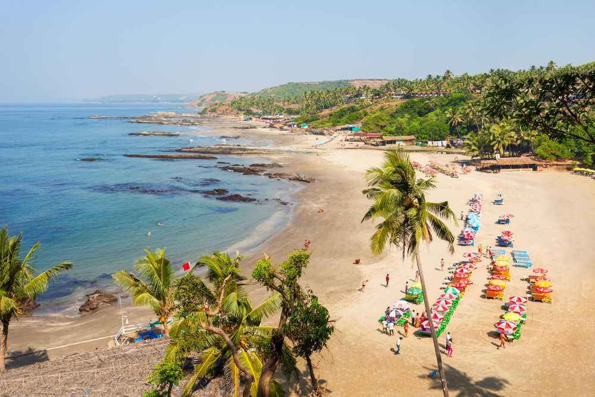
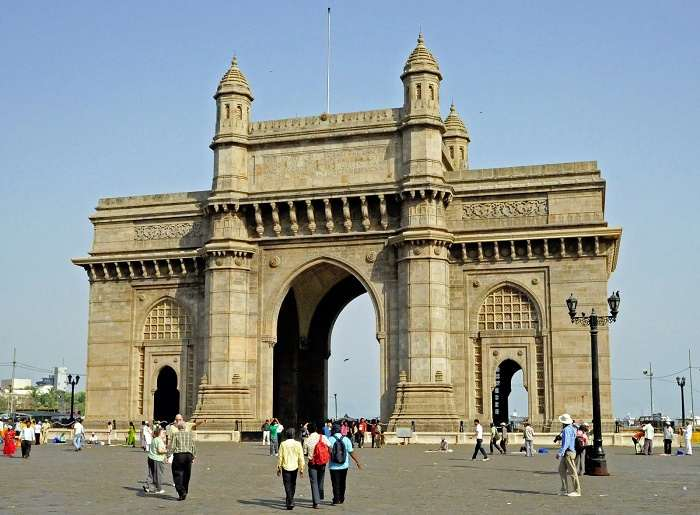

Taj Mahal is located in Agra. Agra Fort which is very famous in Agra where the Mogul emperor Shah Jahan used to stay.It is fully made of marbles and a very beautiful structure of art. It is also one of the wonders of the world and it was made by Shah Jahan for a wife on the contrary for showing his love. Taj Mahal looks very beautiful in the night of moons light.He called the best architectures in the world to design the Taj Mahal and it took more than 22 years to build the whole Taj Mahal. And it is also said that there were hundreds of design shown to Mr. Shah Jahan of Taj Mahal, after choosing from all that hundred designs he chose the final design of Taj Mahal and made it with the purest form of marble in the remembrance of his dead wife.
Goa
Goa is one of the smallest states in India known for its brilliant beaches, scrumptious food and Portuguese heritage. With over 2 million tourists coming in every year, Goa has to be well connected and accessible. Goa is easily accessible by road, rail and air. This city is blessed with some stimulating beaches along with historical churches and vibrating culture and above all the delicious Lip-smacking Food.The people are quite friendly towards tourists and celebrate many festivals throughout the year. While the seafood is excellent, Goa has one of the best nightlife in the country with trendy bars, beach shacks, elegant cafes and many clubs and discotheques.

Jaipur
Jantar Mantar of Jaipur is one of the old monument in India and world's largest stone sundial. The monument is a UNESCO World Heritage site, located near two most famous attractive landmarks of City Palace and Hawa Mahal.
Gateway of India
The Gateway of India, with its regal arches, stands guard facing the Arabian Sea at Apollo Bunder in bustling Colaba area of Mumbai. The most popular tourist attraction, it is the unofficial icon of the city of Mumbai and is a reminder of its rich colonial history as Bombay. The first structure to welcome visitors entering the city by sea, it is popularly called ‘Taj Mahal of Mumbai’. The Gateway of India, with its regal arches, stands guard facing the Arabian Sea at Apollo Bunder in bustling Colaba area of Mumbai. The most popular tourist attraction, it is the unofficial icon of the city of Mumbai.

Ooty
Popularly referred to as Ooty, this gem among southern hill resorts is covered in eucalyptus and pine trees and coffee and tea plantations. On a clear day, it's possible to see as far as the Mysore plateau from Dodabetta Peak, the district's most prominent viewpoint. This hill station is surrounded with nilgri trees and also has a huge artificial lake for boating.This place is very beautiful for nature lovers, as you can see many species of birds and animals here. The animals you might see are nilgiri monkeys, giant squirrels and bison. Here you can visit the museum and can have a bridge walk.
Manali
Manali, in Himachal Pradesh, is one of the top adventure travel destinations in India. It's ideal for spending time in the great outdoors, and many of these places to visit in Manali reflect the numerous activities that can be done in the area.Nestled in between the snow-capped slopes of the Pir Panjal and the Dhauladhar ranges, Manali is one of the most popular hill stations in the country. With jaw-dropping views, lush green forests, sprawling meadows carpeted with flowers, gushing blue streams, a perpetual fairy-tale like mist lingering in the air, and a persistent fragrance of pines and freshness - Manali has been blessed with extraordinary scenic beauty.